Meet the chiropractors
Names, titles, photos and bios as they appear on anthonychiro.com/us/.
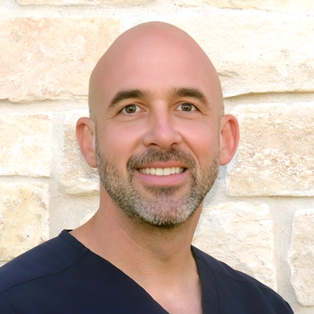
R. Matthew George, D.C.
All Locations
At our practice, we are committed to providing the highest quality medical and chiropractic care. If you have any questions or concerns, feel free to contact me directly.
Email: drgeorge@anthonychiro.com
Dr. George earned his Bachelor of Science in Biology from Marshall University in West Virginia in 2006. He continued his education at Parker College of Chiropractic, where he earned a second bachelor's degree in Anatomy and his Doctorate in Chiropractic Care in 2010.
In 2012, Dr. George joined Anthony Medical & Chiropractic Center and has grown with the company ever since. Today, he serves as an owning provider and the Chief Executive Officer, dedicated to enhancing patient care and outcomes.
A passionate advocate for health and wellness, Dr. George enjoys staying active with trail running and participating in community races and events. He also finds joy in golfing with family and friends. In addition to chiropractic care, Dr. George has a strong interest in computer science and is committed to leveraging technology to improve healthcare delivery and patient well-being.
When he's not working, Dr. George is a proud family man who treasures quality time with his wife and two children, creating lasting memories together. Outside of work and family, he has a deep love for concerts and live music, always seeking the next opportunity to enjoy the vibrant energy of a great performance.

Andrew Yakubik, D.C.
LOCATION: GEORGETOWN
Dr. Yakubik completed his Bachelor of Science in exercise science from Auburn University in 2015. After completing his undergraduate degree from Auburn University, Dr. Yakubik attended Parker University where he received his Doctorate in Chiropractic, graduating Cum Laude.
Dr. Yakubik loves to spend time with his family. If he is not at the clinic or enjoying hikes with his wife, son, and Dog (Watson) you will find him on the golf course. Dr. Yakubik is very passionate about his patient’s care and well-being. Each patient has individual goals about their health. Dr. Yakubik makes it his mission that every patient meets and exceeds their expectations.

Patrick McHorse, D.C.
LOCATION: TEMPLE
Dr. McHorse completed his undergraduate studies at Parker College of Chiropractic in Dallas, TX in 2006. After finishing that, he continued at Parker College of Chiropractic from 2007-2010 where he received his Doctor of Chiropractic degree.
Dr. McHorse is an avid fisherman, where he loves to fish for crappie and even makes his own jigs to fish with. He also enjoys building, flying and driving R/C helicopters, Quad rotor aircraft, and R/C cars. Dr. McHorse is also heavily into Origami and enjoys folding a variety of different creatures, animals, and insects. He is also a veteran of the United States Navy.
Dr. McHorse has successfully completed all four parts of The National Board of Chiropractic Examiners and the Texas state licensing examination, Texas Board of Chiropractic Examiners.

Carlson Thwing (aka "Dr. Wil"), D.C.
LOCATION: TEMPLE
Education Dr. Thwing completed his undergraduate degree at Viterbo University in La Crosse, WI in 2010 with a Bachelor’s degree in Biochemistry and a Mathematics Minor.
After completing his undergraduate he went to Life University, Atlanta, GA from 2012-2015 and received his Doctorate in Chiropractic.
Hobbies
Dr. Thwing is an avid weightlifter and workout enthusiast. He also enjoys riding motorcycles, hunting/fishing, and going hiking with his Black Lab. In addition, Dr. Thwing enjoys attending musical performances with his friends and family.
Licensure and Certifications

Dillan Friedrichs, D.C.
LOCATION: COPPERAS COVE
Dr. Friedrichs graduated from Parker University in April of 2019 and has been dedicated to mastering the art of chiropractic ever since. Under Dr. Friedrichs' care, issues and symptoms have been resolved for patients of all ages.
Taking great pride in providing his patients with the care they need to feel in control of their lives again, he takes great pride not only in treating them but in making a personal connection with each of them.
When he is not working at the clinic, you might find him at a local park, the racquetball court, or searching for the best local cuisine. I am looking forward to providing pain relief and improving lives for the Copperas Cove community.
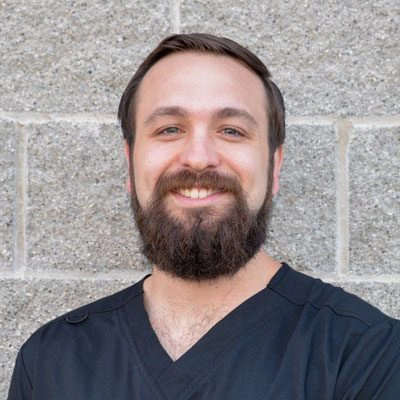
Nichole Roedel, D.C.
LOCATION: TEMPLE
Dr. Roedel completed her Bachelor of Exercise Science from North Dakota State University in 2017. After completing her undergraduate degree from NDSU, Dr. Roedel went on to receive her Doctor of Chiropractic at Parker University in Dallas, TX.
She is very passionate about building strong doctor-patient relationships and helping people get better through chiropractic care. She suffered from severe headaches and neck pain throughout high school and college from sports, and chiropractic was the only thing to help her issues and sparked her interest in chiropractic.
Dr. Roedel loves spending time outdoors with her three dogs (Ollie, Louie, and Theo). When she has the time, preferably in the summer, she visits family back home in Minnesota. And yes, she is a Vikings fan and loves watching football with friends and family!
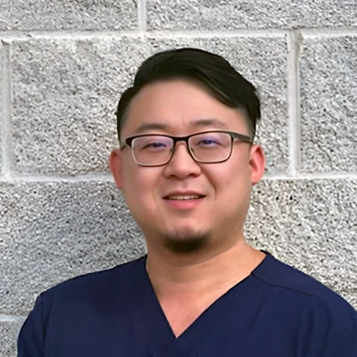
Michael Si, D.C.
LOCATION: ROUND ROCK
Dr. Michael Si began his journey as a pre-veterinary student at Texas A&M University. After hearing about the benefits of Chiropractic care in a freshman biomedical studies class, Michael discovered a new passion that has led him to where he is today.
Dr. Si completed his Doctorate of Chiropractic at Parker University in Dallas Texas minutes away from where he graduated high school bringing things full circle.
On the weekends he enjoys hikes with his dog Laela, being an amateur food critic, and occasional USPSA shooting competitions. He has never met a food he doesn't like and is always open to any culinary recommendations.
"Chiropractic is the most rewarding job in the world. Seeing your patients progress from pain and hopelessness to getting back to doing the things they love. There is nothing like it!"
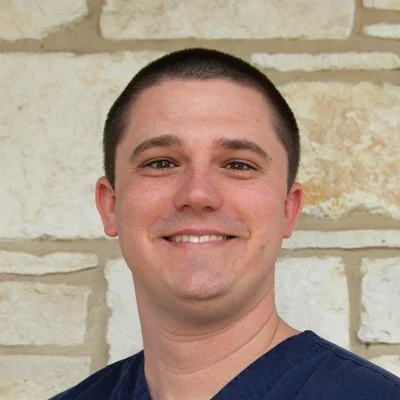
Dirk Lindley, D.C.
LOCATION: WACO
Dirk Bryce Lindley DC, BCCS was born and raised in Waco, Texas. He graduated from Midway High School in 2008 before leaving home for over ten years to further his education and gain invaluable working experience.
Initially, he moved to the west coast to attain a bachelors degree in Kinesiology and Sports Medicine from Pepperdine University in Malibu, California.
After graduating in 2012, he used this education to work under an osteopathic doctor and help develop a physical therapy program. He continued his education by pursuing a Doctorate of Chiropractic from Parker University in Dallas, Texas, which he obtained in 2017. While pursuing his doctorate, he also specialized in Functional Neurology and Functional Medicine. During this time, he became a board-certified cognitive specialist. He also obtained his board certification in childhood developmental disorders. He moved to Indianapolis, Indiana, and became the owner and operator of two Brain Balance Achievement Centers, using his expertise to help hundreds of families and children struggling with various developmental disorders. After moving back to Waco in 2020, he is excited to be close again to friends and family and to use his chiropractic degree to serve the community he has always considered home.
His hobbies mostly involve spending time outdoors, including hunting and fishing. He enjoys riding his bike and going to the gym to further on his own physical health and well-bein. He and his wife enjoy country music concerts, especially if there is a dance floor. When she is not with him, you will probably find his border collie, Zeke, in the passenger seat instead.

Britt Myers, D.C.
LOCATION: WACO
Dr. Britt Myers is a native of Temple and has been practicing in the greater Central Texas area for the past 21 years. Dr. Myers enjoys helping our patients recover from their injuries and resume living a healthier, higher quality life through chiropractic care.
Dr. Myers grew up in Temple and graduated from Temple High. From there, he attended and graduated from Texas Tech University in 1991 receiving a Bachelor Degree in Biology. In 2001, he graduated from Parker College of Chiropractic in Dallas receiving a Doctorate of Chiropractic.
Dr. Myers and his wife Sherly have been happily married for 17 years. They are blessed with two incredible children, ages 12 and 14. He and his family love the outdoors...hunting, skiing, camping, and the beach.
Dr. Myers and his family are very active in their church, First United Methodist in Woodway and in the community as well. He has served as a volunteer doctor at the Meyer Center in Waco and continues to support Mission Waco, a ministry to the homeless and less fortunate in the Waco area.
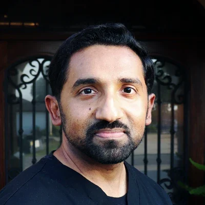
Alex Jolly, D.C.
LOCATIONS: TAYLOR
Dr. Jolly is a native of the picturesque state of Minnesota. He developed a deep appreciation for the outdoors and a passion for health and wellbeing while growing up amid the region's natural beauty and warm community.
As an undergraduate student at the University of Minnesota, Dr. Jolly developed a keen interest in science and the human body. Through the study of Biochemistry, he gained an in-depth understanding of the intricate molecular mechanisms that govern life. In order to help others achieve optimal health, Dr. Jolly embarked on a transformational journey to become a chiropractor. As a doctor of chiropractic student at Northwestern Health Sciences University in Minnesota, he immersed himself in the principles of chiropractic care and holistic healing. In order to expand his expertise, Dr. Jolly also obtained a license in Chiropractic Acupuncture. Additionally, Dr. Jolly is a certified CPR/AED instructor.
PASSIONATE ABOUT: While balancing a successful professional life with a fulfilling personal life, Dr. Jolly cherishes the time he spends with his wife and adventurous 5-year-old son. They enjoy exploring the great outdoors, taking family hikes, and participating in recreational activities to nurture their bond and create lasting memories. Besides his medical practice, Dr. Jolly is passionate about capturing life's beautiful moments through photography. His artistic outlets are photography, videography, and video editing, which allow him to express his unique perspective and share the wonders of the world.
In addition to serving his community as a chiropractor, Dr. Jolly remains dedicated to empowering individuals to attain wellness. Focusing on holistic healing, he strives to improve the well-being and quality of life of his patients by addressing the root causes of health issues.
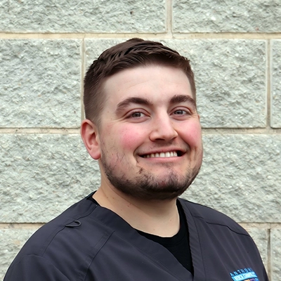
Colton Wostenberg, D.C.
LOCATIONS: NORTH WACO
Dr. Colton Drew Wostenberg was born and raised in Laramie, Wyoming. In 2019, he graduated from the University of Wyoming with a Bachelor's degree in Kinesiology and Health Promotion. Upon completing his Doctor of Chiropractic degree, Dr. Wostenberg attended Palmer College of Chiropractic in Davenport IA.
Dr. Wostenberg's mission is to find and resolve disruptions in the spine to help improve overall health through evidence-based nervous system management. Chiropractic treatment resulted in significant improvement in his back pain after he was tackled in rugby.
While away from the clinic, he enjoys spending time with his wife, two children, three dogs, and one cat. Their favorite outdoor activities include hiking or going to the park together.
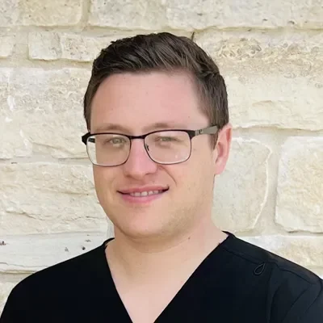
Logan Hengst, D.C., B.E.S.S.
LOCATIONS: HEWITT
Logan Hengst, DC, was born and raised in Waco, Texas. After high school, he attended Texas State University for his undergraduate studies. In addition to a bachelor's degree in Exercise and Sports Science, he also received a master's degree in Health and Wellness Promotion for Clinical Populations.
Upon completing that, he attended Parker University and graduated with a doctorate in chiropractic. Dr. Hengst develops specialized treatment plans to address the root cause of pain and dysfunction. Patients' health goals are very important to him, and he is passionate about their care.
Dr. Hengst loves spending time with his wife, son, and two dogs. You can find him playing sports, fishing, golfing, or doing anything outside when he's not at the clinic or with his family.
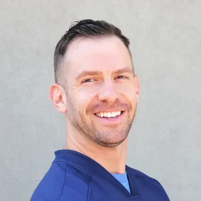
Ben Lanz, D.C.
LOCATIONS: GEORGETOWN
During his childhood, Ben Lanz D.C. lived in many places due to his father's work as a geologist. He was always drawn to nature and its beauty, exploring the bayous in south Houston, climbing mountains in Alaska, and surviving harsh subarctic winters in Russia.
During these early experiences, I developed a curiosity about biology and how things work. In addition to his interest in how things work, Dr. Lanz also competed as a mountain biker and road cyclist during his junior years at Fort Lewis College in Durango, Colorado. During this time, he was introduced to chiropractic and its benefits. As a result, he pursued an undergraduate degree in human biology and a doctorate degree in chiropractic at the University of Western States in Portland, OR.
Dr. Lanz enjoys spending time with his wife and three kids, weightlifting, mountain biking, anything outdoors, and traveling! Still to this day, he is passionate about understanding how things work and how it relates to his patients' success and pain-free lives.
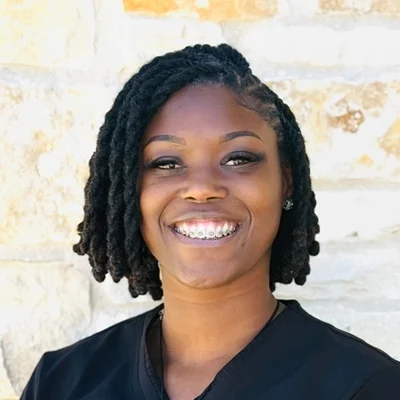
Shaquita Kelly, D.C.
LOCATIONS: JARRELL
Dr. Shaquita Kelly is originally from Lake Providence, Louisiana, and was born in Monroe, Louisiana. Now she proudly calls Texas home. As a graduate of Alcorn State University, Dr. Kelly earned a Bachelor of Science degree in Health Science and Physical Therapy. She initially planned to attend physical therapy school due to her interest in science and biomechanics.
Dr. Kelly was encouraged to explore a variety of healthcare professions during her senior year. After shadowing numerous chiropractic offices, she discovered a deep connection to chiropractic care and its hands-on, holistic approach to healing. It was this pivotal experience that shaped her career path and solidified her calling. With her warm demeanor and clinical expertise, she is a trusted provider for patients of all ages.
After completing her Doctor of Chiropractic degree at Texas Chiropractic College in August 2021, Dr. Kelly obtained certification in the Webster Technique, a specialized chiropractic technique that promotes pelvic balance and optimal fetal positioning during pregnancy. In addition to providing compassionate, evidence-based care, she strives to help patients improve their mobility, relieve pain, and enhance their quality of life. With just a "touch of her hands", Dr. Kelly encourages and enhances her patients' overall wellness. As a dedicated chiropractor, Dr. Kelly brings both passion and purpose to her practice.
Dr. Kelly enjoys a vibrant and balanced life outside of the clinic. She enjoys working out, spending time in nature, cycling, sightseeing, and exploring new places. Passionate about cooking at home, she enjoys expressing her creativity there. The most important thing she values is spending time with family and friends, as well as her beloved dog, Ryleigh. Dr. Kelly believes that wellness is a lifestyle and is committed to helping others live healthier, more fulfilling lives. Her passion for empowering others to take control of their health and well-being drives her to practice what she preaches.
License & Certification:
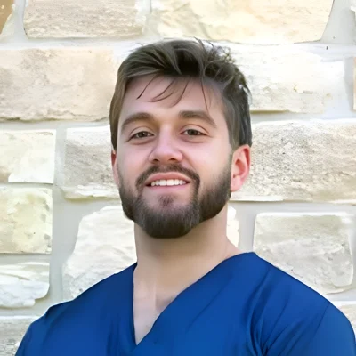
Matthew Grenda , D.C.
LOCATIONS: WACO
Dr. Matthew Grenda , D.C. is a Canadian chiropractor who earned his degree from Logan University in St. Louis, Missouri, in 2025. He is passionate about providing patient-centered, evidence-based care to improve health, mobility, and overall well-being.
With a strong foundation in chiropractic principles, Dr. Grenda remains committed to continuous learning and delivering compassionate, high-quality care.
He is proud to be part of the Anthony Medical & Chiropractic team, where he supports patients on their journey to optimal wellness and function.
Outside the clinic, Dr. Grenda enjoys staying active through sports, particularly golf, and practicing mixed martial arts.

Jason Rounds, D.C.
LOCATIONS: KILLEEN
Dr. Jason Rounds brings a unique background and a deeply personal understanding of pain, recovery, and long-term spinal health to his patients.
Before becoming a chiropractor, Dr. Rounds owned and operated a residential construction company, Onsite Design and Construction, where he built homes in Maine. During one winter project, a serious job-site accident changed the course of his life. While working on a two-story structure in icy conditions, unsecured staging shifted, causing Dr. Rounds to fall two stories. The impact resulted in herniated discs at L4 and L5, leaving him with significant pain and limited options.
After consulting with multiple medical providers who recommended spinal fusion surgery, Dr. Rounds sought a more conservative approach. A massage therapist recognized structural issues in his lower spine and referred him to a chiropractor. Through imaging and examination, the underlying cause of his injuries became clear. After his very first chiropractic adjustment, Dr. Rounds experienced noticeable relief. Over the course of care, his improvement was so profound that it inspired a complete career change.
At the age of 40, Dr. Rounds made the decision to pursue chiropractic medicine, enrolling at Logan University in St. Louis, Missouri. He graduated in 2016 and has since spent over nine years practicing chiropractic care in multiple clinical settings as an intern and associate doctor. Throughout his career, he has developed experience with a wide range of chiropractic techniques, believing that effective care comes from choosing the right approach for each individual patient, sometimes requiring a firm correction, other times a gentle, precise adjustment.
Dr. Rounds is passionate about helping patients find relief, restore function, and improve their overall quality of life. He looks forward to working with you and helping you achieve the same meaningful improvement in health that led him to chiropractic care.

Matthew Kuo, D.C.
LOCATIONS: GEORGETOWN
Dr. Matt earned his Bachelor of Arts in Athletic Training from Cedarville University in 2016 before receiving his Doctor of Chiropractic degree from Palmer College of Chiropractic in Davenport, Iowa, in 2020.
Benjamin Haby, D.C.
LOCATION: TEMPLE
Benjamin Haby, D.C. completed his undergraduate degree at Baylor University Waco, TX before earning his Doctorate of Chiropractic from Parker University. His passion for chiropractic care began after experiencing a college injury and receiving exceptional care from a chiropractor.

Trinh Nguyen, D.C., M.B.A.
LOCATIONS: KILLEEN
Dr. Nguyen is a proud Louisiana Tech alum, where she earned her Bachelor’s degree in Kinesiology and Health Sciences. She continued her education at Parker University, earning both her Doctor of Chiropractic and Master of Business Administration.
She is passionate about providing patient-centered care that helps patients move better, function better, and work toward long-term health and wellness.
Dr. Nguyen is committed to continued learning and providing compassionate, high-quality care tailored to each patient’s individual needs. She believes that addressing the muscles and other soft tissues is just as important as adjusting the joints and incorporates both into her approach to help patients move and function at their best. She is passionate about working alongside her patients to better understand their goals and develop a personalized approach to care.
Outside of the clinic, Dr. Nguyen enjoys staying active at the gym, exploring the shops around the Killeen-Temple area, discovering new local restaurants, and spending time with her partner and their three dogs!
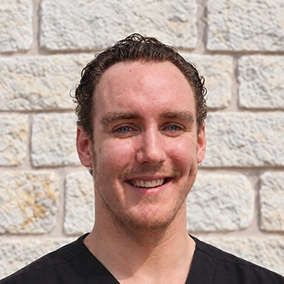
Troy Cook, D.C.
LOCATION: ROUND ROCK
Dr. Troy Cook’s passion for chiropractic care began with his own personal experience as a patient. After recovering from multiple motor vehicle accidents in 2018, he discovered firsthand the positive impact chiropractic treatment could have on his health and well-being.
Inspired by his experience and encouraged by his chiropractor, he pursued his Doctor of Chiropractic degree at Parker University, graduating in the spring of 2022.
Before beginning his chiropractic career, Dr. Cook earned his Bachelor of Science in Exercise Science from the University of Texas at Arlington. During this time, he had the unique opportunity to assist with strength and conditioning training for several U.S. Olympic figure skaters in the Dallas-Fort Worth area.
After practicing chiropractic care for four years in his hometown of Grapevine, Texas, Dr. Cook relocated to the Austin area to be closer to family. He is passionate about helping patients improve their mobility, manage discomfort, and work toward a healthier, more active lifestyle. His personal journey allows him to connect with patients on a deeper level and understand the importance of compassionate, individualized care.
Outside of the office, Dr. Cook is a proud pet parent to four cats and one dog. A lifelong hockey player and enthusiast, he also enjoys cheering on his favorite team, the Dallas Stars!
Dr. Cook looks forward to building lasting relationships with his patients and helping them take meaningful steps toward better health and wellness.

Wesley Smith, D.C.
LOCATION: TEMPLE & WACO
Dr. Wesley Smith is a dedicated Doctor of Chiropractic at Anthony Medical & Chiropractic Center. He earned his undergraduate degree from Ball State University in Muncie, Indiana, before completing his Doctor of Chiropractic degree at Logan University in Chesterfield, Missouri.
Passionate about patient-centered care, Dr. Smith believes in building meaningful relationships with his patients and helping them achieve their individual health and wellness goals. He is committed to creating a welcoming, supportive environment where every patient feels heard, valued, and confident in their care.
Outside of the clinic, Dr. Smith enjoys spending quality time with his wife and playing golf. He looks forward to serving his community, developing lasting patient relationships, and helping individuals take positive steps toward better health and overall well-being.
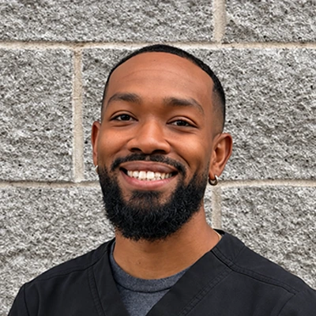
Kameren Jelks, D.C.
LOCATIONS: KILLEEN
Born in Waco, Texas, and raised in Dallas, Dr. Kameren Jelks brings his Texas roots, passion for health and wellness, and dedication to patient care to Anthony Medical & Chiropractic Center.
Dr. Jelks earned his Doctor of Chiropractic degree from Parker University in 2025, following his Bachelor of Science in Kinesiology from Prairie View A&M University in 2021. He is committed to continuous professional development, refining his chiropractic techniques, and providing personalized, high-quality care to help patients improve their mobility, relieve discomfort, and achieve their wellness goals.
Outside the clinic, Dr. Jelks enjoys staying active through basketball, hiking, and walking his dog. He also loves traveling, exploring new places, and spending time enjoying the outdoors.
Call for an appointment
(254) 410-688811 locations across Central Texas. Free insurance verification. Se Habla Español.